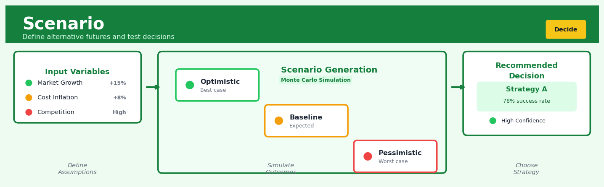

Scenario#


The biggest mistake teams make with scenario planning is treating it as a one-time exercise instead of a living decision framework. Your scenarios should be parameterized and re-runnable as new data arrives, not static PowerPoint slides gathering dust. I always build scenario nodes with clear input assumptions that stakeholders can adjust in real-time, turning what-if questions into immediate answers rather than week-long analysis cycles.
The 60-Second Version#
What it does: Scenario analysis compares how your business performs across multiple plausible futures so you can choose strategies that work well even when the future surprises you.
When to use it: Use it when you’re making a consequential decision under uncertainty—launching a product, setting capacity, entering a market—and you need to understand what could go wrong and what to do about it.
What you get back: A structured comparison showing how each strategic option performs across different futures, revealing which choices are robust, which are risky, and where you need contingency plans.
Difficulty |
Easy to Moderate |
Typical runtime |
Minutes to hours (depends on model complexity) |
What you bring |
A decision to make, key uncertainties, and a model linking inputs to outcomes |
What you get |
Performance of each strategy across scenarios with risk/opportunity flags |
Heuristix bucket |
Decide — Decision Intelligence |
Scenarios are stories, not forecasts—the goal is preparedness and robust choice, not predicting which future will happen.
Learning Objectives#
After reading this chapter, a business user will be able to:
Identify situations where scenario analysis is warranted—specifically when facing irreducible uncertainty about market conditions, regulations, or competitor actions that could fundamentally alter strategy outcomes.
Translate scenario analysis outputs into actionable narratives for executives, explaining which strategies remain robust across scenarios and which depend critically on specific assumptions materializing.
Design contingency plans by mapping trigger indicators to pre-defined responses, enabling your organization to pivot quickly when early signals reveal which scenario is unfolding.
After reading this chapter, a data scientist will be able to:
Construct internally consistent scenario sets by combining correlated uncertainties appropriately, avoiding the trap of creating implausible combinations that undermine stakeholder confidence.
Calibrate the number and diversity of scenarios by balancing coverage of the uncertainty space against cognitive load, applying dimensionality reduction techniques when needed to keep scenario sets manageable.
Validate scenario models through backtesting against historical analogs, sensitivity analysis on key drivers, and cross-consistency checks that ensure each scenario’s narrative aligns with its quantitative assumptions.
Overview#
Scenario analysis is a decision intelligence technique that systematically evaluates how different combinations of uncertain inputs and strategic choices affect business outcomes. It belongs to the broader family of what-if analysis and decision support methods, bridging uncertainty quantification with prescriptive analytics. By constructing and comparing multiple plausible futures—each defined by a coherent set of assumptions—scenario analysis enables decision-makers to stress-test strategies, identify robust choices, and prepare contingency plans before committing resources.
When to Use This#
Use scenario analysis when:
Strategic planning under deep uncertainty — When forecasting a single “most likely” future is unreliable due to structural breaks, emerging technologies, or regulatory changes, scenarios help explore the space of possibilities rather than betting on one prediction.
Capital investment decisions — Before committing to large, irreversible investments (new facilities, acquisitions, infrastructure), scenarios reveal how returns vary across economic conditions, demand trajectories, and competitive responses.
Risk appetite calibration — When leadership needs to understand not just expected outcomes but the full range of potential results, including tail scenarios that could threaten business continuity.
Sensitivity analysis at scale — When you need to vary multiple input variables simultaneously rather than one-at-a-time sensitivity, capturing interaction effects and non-linear responses.
Regulatory stress testing — In financial services, insurance, and energy sectors where regulators mandate evaluation of business resilience under prescribed adverse conditions.
Supply chain resilience planning — When evaluating how disruptions (supplier failures, logistics bottlenecks, demand shocks) propagate through interconnected systems.
Pricing and commercial strategy — When exploring how different price points interact with competitor reactions, demand elasticity, and cost structures across market conditions.
Model validation and robustness checking — When you want to verify that an optimisation or forecasting model behaves sensibly across a range of plausible inputs before deployment.
Do NOT use scenario analysis when:
You need a single point forecast — If the business question is “what will sales be next quarter?”, scenario analysis is overkill; use forecasting methods instead.
All inputs are well-characterised with probability distributions — If you can confidently specify distributions for all uncertainties, full Monte Carlo simulation may be more appropriate than discrete scenarios.
Real-time operational decisions — Scenario analysis is computationally and cognitively demanding; for millisecond decisions, use pre-computed decision rules or online algorithms.
Questions This Answers#
Strategy Evaluation & Risk Assessment#
What happens to our profitability if raw material costs increase by 25% while demand drops by 15%?
If we launch in Asia next year but our main competitor drops prices by 30%, can we still hit our 18-month breakeven target?
Which growth strategy—organic expansion or acquisition—gives us the best downside protection if the economy enters recession?
How exposed are we if both our top supplier fails and shipping costs double at the same time?
What’s our cash runway under a worst-case scenario where new customer acquisition costs rise 40% and conversion rates fall to 2019 levels?
Investment & Resource Allocation Decisions#
Should we invest $8M in the new production line if there’s a 30% chance tariffs get reinstated next year?
If we hire 50 more engineers now, what’s our break-even timeline under optimistic versus pessimistic revenue scenarios?
Which three markets should we enter first if we only have $12M to allocate and can’t predict regulatory changes?
Does it make sense to lock in a five-year lease on warehouse space given the uncertainty around our DTC versus wholesale mix?
Contingency Planning & Preparedness#
What would we need to do differently if interest rates hit 8% before our Series B round?
If our flagship product gets delayed by six months, which backup revenue streams could keep us on track?
How quickly could we cut operating expenses to 60% of current levels if we lose our anchor client?
What early warning signs should we monitor to know which scenario we’re actually heading into—so we’re not caught flat-footed?
How It Works#
Imagine you’re planning a family road trip from Seattle to Denver next month. You can’t predict the future, so you sketch out three different stories: In the “smooth sailing” story, the weather is clear, the car runs perfectly, and you take scenic stops, arriving in three days. In the “rough patches” story, you hit a snowstorm in Wyoming, spend extra on a hotel, and arrive in four days. In the “crisis” story, the car breaks down, you pay for repairs and lose a day, arriving stressed in five days. You don’t know which story will happen, but by thinking through each one—costs, timing, backup plans—you pack extra cash, download offline maps, and join roadside assistance. When departure day comes, you’re ready for whatever unfolds.
SCENARIO ANALYSIS PROCESS
Step 1: Define uncertain inputs & decisions
┌──────────────────────────────────────┐
│ Uncertain: Demand, Costs, Competition│
│ Decisions: Price, Capacity, Launch │
└──────────────────────────────────────┘
↓
Step 2: Build plausible scenarios
┌──────────────┬──────────────┬──────────────┐
│ OPTIMISTIC │ BASELINE │ PESSIMISTIC │
│ High demand │ Medium demand│ Low demand │
│ Low costs │ Medium costs │ High costs │
│ Weak rivals │ Some rivals │ Strong rivals│
└──────────────┴──────────────┴──────────────┘
↓
Step 3: Run outcome model for each
┌──────────────┬──────────────┬──────────────┐
│ Revenue: │ Revenue: │ Revenue: │
│ $2.5M │ $1.8M │ $1.0M │
│ Profit: │ Profit: │ Profit: │
│ $800K │ $400K │ -$100K │
└──────────────┴──────────────┴──────────────┘
↓
Step 4: Compare strategies across scenarios
Strategy A wins in optimistic & baseline
Strategy B avoids loss in pessimistic
→ Choose robust plan
Step 1: Identify what’s uncertain and what you control. You list the factors that could vary—customer demand, raw material costs, competitor actions—and separate them from the choices you’ll make, like pricing or production capacity. These are the ingredients of your scenarios.
Step 2: Construct coherent stories that span a range of futures. You don’t build random combinations. Instead, you create three to five internally consistent scenarios—perhaps “rapid growth,” “steady state,” and “market downturn”—each with its own logic. High demand might pair with aggressive competition; low demand might pair with cost pressures. Each scenario is a believable version of how the world might look.
Step 3: Model the outcomes for each scenario. You run your business model—spreadsheet, simulation, or forecasting tool—using the inputs from each scenario. If Scenario A assumes high demand and low costs, you calculate the resulting revenue, profit, and resource needs. Repeat for every scenario. Now you have a concrete picture of how each future plays out.
Step 4: Evaluate your strategic options across all scenarios. You test different decisions—launch Product X, expand the factory, or hold steady—in each scenario. One strategy might win big in optimistic cases but fail catastrophically in pessimistic ones. Another might perform moderately well everywhere. You’re looking for strategies that remain viable across scenarios, or you prepare contingency triggers: “If we see early signs of Scenario C, switch to Plan B.”
Step 5: Prepare, monitor, and adapt. You don’t pick which scenario will happen—you can’t. Instead, you choose a robust strategy, set up early warning indicators, and build flexibility into your plans. As reality unfolds, you watch which scenario you’re tracking toward and adjust accordingly.
The key insight: Scenario analysis works because it replaces the impossible task of predicting one future with the achievable task of preparing for several, transforming uncertainty from a paralysing unknown into a structured set of possibilities you can act upon.
The Intuition#
Imagine you are planning a wedding six months in advance. You cannot know with certainty whether it will rain, whether your key supplier will deliver on time, or whether your guest count will match RSVPs. A naive approach would be to plan only for sunny weather with perfect execution—and then scramble when reality differs. A wiser approach is to construct a small number of distinct, internally consistent stories about how the day might unfold: the “perfect day” scenario, the “weather disruption” scenario, the “vendor failure” scenario, and perhaps a “combined stress” scenario. For each, you work through the implications, identify what you would do differently, and prepare contingencies. This is scenario analysis applied to life.
The power of scenarios lies in their ability to make abstract uncertainty concrete and discussable. Rather than staring at a probability distribution—which can feel both overwhelming and sterile—decision-makers engage with vivid, named futures. “What do we do in the Recession scenario?” is a more productive boardroom question than “What if GDP growth is negative 2.3%?” Scenarios bundle correlated assumptions together (a recession typically means lower demand, higher unemployment, tighter credit, and lower commodity prices all at once), creating coherent worlds that respect the structure of reality rather than treating variables as independent.
Mathematically, scenario analysis occupies a middle ground between deterministic analysis (one future) and full stochastic simulation (thousands of futures). By carefully selecting a small number of scenarios—typically 3 to 12—that span the space of key uncertainties, we achieve computational tractability while preserving strategic insight. The art lies in scenario design: choosing scenarios that are plausible (stakeholders must take them seriously), diverse (they should cover meaningfully different futures), and decision-relevant (they should discriminate between strategic alternatives). A well-designed scenario set functions like a well-designed experiment—it isolates the effects of key uncertainties on outcomes that matter.
The Mathematics#
Problem Setup and Notation#
Let \(\mathbf{x} \in \mathbb{R}^p\) denote a vector of decision variables (actions the decision-maker controls) and \(\boldsymbol{\theta} \in \Theta \subseteq \mathbb{R}^q\) denote a vector of uncertain parameters (factors outside the decision-maker’s control). The outcome function \(f: \mathbb{R}^p \times \Theta \to \mathbb{R}^m\) maps decisions and uncertain parameters to \(m\) outcome metrics of interest:
A scenario \(s\) is a specific realisation of the uncertain parameters, denoted \(\boldsymbol{\theta}^{(s)}\). A scenario set \(\mathcal{S} = \{s_1, s_2, \ldots, s_n\}\) consists of \(n\) scenarios, each with associated parameter vector \(\boldsymbol{\theta}^{(s_i)}\) and optional probability weight \(\pi_{s_i} \geq 0\) with \(\sum_{i=1}^{n} \pi_{s_i} = 1\).
Scenario Outcome Evaluation#
For a fixed decision \(\mathbf{x}\) and scenario set \(\mathcal{S}\), we compute the scenario outcome matrix:
where \(f_j\) denotes the \(j\)-th component of the outcome function. This matrix is the fundamental output of scenario analysis.
Aggregation and Summary Statistics#
When scenarios carry probability weights, we can compute:
Expected outcome: $\( \mathbb{E}[y_j] = \sum_{i=1}^{n} \pi_{s_i} \cdot Y_{ij} \)$
Variance: $\( \text{Var}(y_j) = \sum_{i=1}^{n} \pi_{s_i} \cdot (Y_{ij} - \mathbb{E}[y_j])^2 \)$
Worst-case outcome (minimax): $\( y_j^{\text{worst}} = \min_{i \in \{1,\ldots,n\}} Y_{ij} \)$
Best-case outcome: $\( y_j^{\text{best}} = \max_{i \in \{1,\ldots,n\}} Y_{ij} \)$
Range: $\( \text{Range}(y_j) = y_j^{\text{best}} - y_j^{\text{worst}} \)$
Decision Optimisation Under Scenarios#
When comparing decision alternatives \(\mathbf{x} \in \mathcal{X}\), several decision criteria are available:
Expected value maximisation: $\( \mathbf{x}^* = \arg\max_{\mathbf{x} \in \mathcal{X}} \sum_{i=1}^{n} \pi_{s_i} \cdot f(\mathbf{x}, \boldsymbol{\theta}^{(s_i)}) \)$
Minimax (maximin) criterion — maximise the worst-case outcome: $\( \mathbf{x}^* = \arg\max_{\mathbf{x} \in \mathcal{X}} \min_{s \in \mathcal{S}} f(\mathbf{x}, \boldsymbol{\theta}^{(s)}) \)$
Minimax regret — minimise the maximum opportunity cost: $\( \mathbf{x}^* = \arg\min_{\mathbf{x} \in \mathcal{X}} \max_{s \in \mathcal{S}} \left[ \max_{\mathbf{x}' \in \mathcal{X}} f(\mathbf{x}', \boldsymbol{\theta}^{(s)}) - f(\mathbf{x}, \boldsymbol{\theta}^{(s)}) \right] \)$
Hurwicz criterion — weighted combination of best and worst cases with optimism parameter \(\alpha \in [0,1]\): $\( \mathbf{x}^* = \arg\max_{\mathbf{x} \in \mathcal{X}} \left[ \alpha \cdot \max_{s \in \mathcal{S}} f(\mathbf{x}, \boldsymbol{\theta}^{(s)}) + (1-\alpha) \cdot \min_{s \in \mathcal{S}} f(\mathbf{x}, \boldsymbol{\theta}^{(s)}) \right] \)$
Assumptions#
Finite scenario representation — The uncertain future can be meaningfully approximated by a finite set of discrete scenarios.
Scenario independence from decisions — The uncertain parameters \(\boldsymbol{\theta}^{(s)}\) are exogenous; decisions \(\mathbf{x}\) do not influence which scenario materialises.
Outcome function computability — \(f(\mathbf{x}, \boldsymbol{\theta})\) can be evaluated for any valid input combination (may involve simulation, optimisation, or closed-form calculation).
Coherent probability weights (if used) — Weights \(\pi_s\) represent a consistent probability measure over scenarios.
Sensitivity Analysis Within Scenarios#
To decompose outcome variation, we can compute the main effect of uncertain parameter \(\theta_k\) using factorial design principles. For scenarios structured as a full factorial over \(K\) binary factors:
Interaction effects between parameters \(\theta_k\) and \(\theta_l\):
where subscripts denote the levels of parameters \(k\) and \(l\).
Edge Cases#
Single scenario (\(n=1\)): Degenerates to deterministic analysis; variance is zero, and all aggregations collapse to the single outcome.
Uniform weights with many scenarios: Approximates Monte Carlo simulation; summary statistics converge to population moments.
Infeasible scenarios: If \(f(\mathbf{x}, \boldsymbol{\theta}^{(s)})\) is undefined for some \((\mathbf{x}, s)\) combinations, handle via constraint violation penalties or scenario filtering.
Relationship to Other Methods#
Monte Carlo simulation: Scenario analysis with \(n \to \infty\) and scenarios drawn from \(p(\boldsymbol{\theta})\).
Sensitivity analysis: Single-factor scenario analysis (varying one parameter while holding others at baseline).
Robust optimisation: Related to minimax criterion; seeks decisions that perform well under adversarial uncertainty.
Stochastic programming: Optimisation over scenarios with recourse decisions allowed after uncertainty resolves.
Understanding the Mathematics#
The Scenario Outcome Function#
The equation:
Read it aloud:
“The outcome for scenario s equals some function that depends on the scenario’s input conditions, the decision we make, and the parameters specific to that scenario.”
What each symbol means:
\(y_s\) = the business outcome we care about in scenario s (profit, revenue, market share)
\(f\) = the model or function that transforms inputs into outcomes
\(x_s\) = external conditions in scenario s (oil prices, customer demand, competitor actions)
\(d\) = the decision or strategic choice we control (pricing, capacity, investment level)
\(\theta_s\) = parameters that govern how the world works in scenario s (cost structures, conversion rates)
A concrete numerical example:
Suppose we run a hotel chain deciding how many rooms to build. In a “strong tourism” scenario: outcome (annual profit in \(M) = 2.5 × (rooms built) − 0.8 × (rooms built)² − fixed costs. If we build 800 rooms with fixed costs of \)500K, then profit = 2.5(800) − 0.8(800)² − 0.5 = 2,000 − 512 − 0.5 = $1,487.5M.
Why this equation matters:
Without explicitly modeling how outcomes depend on both our choices and the uncertain future, we’d optimize for one guess about the world—and fail catastrophically when reality differs.
Expected Value Across Scenarios#
The equation:
Read it aloud:
“The expected outcome for decision d equals the sum, over all scenarios, of each scenario’s probability multiplied by the outcome that decision produces in that scenario.”
What each symbol means:
\(\mathbb{E}[y|d]\) = expected (probability-weighted average) outcome given we choose decision d
\(S\) = total number of scenarios we’re analyzing
\(p_s\) = probability we assign to scenario s occurring (all probabilities sum to 1.0)
\(y_s(d)\) = the outcome decision d produces if scenario s actually happens
A concrete numerical example:
A manufacturer choosing production volume faces three demand scenarios: Low (30% chance, profit = \(200K), Medium (50% chance, profit = \)850K), High (20% chance, profit = \(1,200K). Expected profit = 0.30(200) + 0.50(850) + 0.20(1,200) = 60 + 425 + 240 = \)725K.
Why this equation matters:
Expected value lets us compare decisions fairly when each performs differently across futures—choosing the highest outcome in one scenario ignores the risk that scenario won’t happen.
Robust Decision Criterion#
The equation:
Read it aloud:
“The robust optimal decision is the one that maximizes the minimum outcome across all scenarios—in other words, pick the choice that gives you the best worst-case result.”
What each symbol means:
\(d^*\) = the robust (best worst-case) decision
\(\arg\max_d\) = “the decision d that maximizes…”
\(\min_s y_s(d)\) = the worst outcome decision d produces across all scenarios s
A concrete numerical example:
We’re choosing a supply chain strategy. Strategy A yields \(4M, \)7M, \(9M across three scenarios; Strategy B yields \)5M, \(6M, \)8M. Strategy A’s worst case = \(4M; Strategy B's worst case = \)5M. The robust choice is B because \(5M > \)4M, even though A has higher upside.
Why this equation matters:
When we can’t afford a catastrophic outcome—think safety-critical systems or betting-the-company investments—maximizing expected value is reckless; we need strategies that survive all plausible futures.
The Big Picture#
Scenario mathematics systematically evaluates decisions under irreducible uncertainty by computing outcomes across multiple distinct futures. The expected value formula weighs scenarios by likelihood, appropriate when we can “play the game” many times and let probabilities average out. The robust criterion ignores probabilities entirely, focusing on survival guarantees when a single bad outcome is unacceptable. This mathematical framework was chosen because reality often presents discrete alternative futures (trade war or no trade war, regulation or status quo) rather than smooth continuous uncertainty—scenarios capture structural differences that probability distributions alone cannot represent. In essence: we’re calculating what each choice delivers in each plausible world, then picking the choice whose profile across worlds best matches our risk tolerance and strategic goals.
Python Implementation#
import numpy as np
import pandas as pd
from itertools import product
import matplotlib.pyplot as plt
# =============================================================================
# Example 1: Basic Scenario Analysis for Capacity Investment
# =============================================================================
# Define the outcome function: Net Present Value of a capacity expansion
def calculate_npv(investment, capacity, demand_growth, price, cost_per_unit, discount_rate, years=10):
"""
Calculate NPV of a capacity investment.
Parameters:
-----------
investment : float - Initial capital expenditure ($M)
capacity : float - Annual production capacity (units)
demand_growth : float - Annual demand growth rate
price : float - Selling price per unit ($)
cost_per_unit : float - Variable cost per unit ($)
discount_rate : float - Annual discount rate
years : int - Project horizon
Returns:
--------
npv : float - Net present value ($M)
"""
base_demand = 80000 # Starting demand
cash_flows = [-investment]
for year in range(1, years + 1):
demand = base_demand * (1 + demand_growth) ** year
sales = min(demand, capacity) # Constrained by capacity
revenue = sales * price
costs = sales * cost_per_unit
annual_cf = (revenue - costs) / 1e6 # Convert to $M
cash_flows.append(annual_cf)
# Calculate NPV
npv = sum(cf / (1 + discount_rate) ** t for t, cf in enumerate(cash_flows))
return npv
# Define scenario parameters
scenarios = {
'Base Case': {
'demand_growth': 0.05,
'price': 120,
'cost_per_unit': 60,
'discount_rate': 0.10,
'probability': 0.50
},
'Optimistic': {
'demand_growth': 0.10,
'price': 140,
'cost_per_unit': 55,
'discount_rate': 0.08,
'probability': 0.20
},
'Pessimistic': {
'demand_growth': 0.02,
'price': 100,
'cost_per_unit': 70,
'discount_rate': 0.12,
'probability': 0.20
},
'Stagflation': {
'demand_growth': 0.00,
'price': 90,
'cost_per_unit': 80,
'discount_rate': 0.15,
'probability': 0.10
}
}
# Define decision alternatives
decisions = {
'Small Expansion': {'investment': 15, 'capacity': 100000},
'Medium Expansion': {'investment': 30, 'capacity': 150000},
'Large Expansion': {'investment': 50, 'capacity': 220000}
}
# Evaluate all decision-scenario combinations
results = []
for dec_name, dec_params in decisions.items():
for scen_name, scen_params in scenarios.items():
npv = calculate_npv(
investment=dec_params['investment'],
capacity=dec_params['capacity'],
demand_growth=scen_params['demand_growth'],
price=scen_params['price'],
cost_per_unit=scen_params['cost_per_unit'],
discount_rate=scen_params['discount_rate']
)
results.append({
'Decision': dec_name,
'Scenario': scen_name,
'NPV ($M)': round(npv, 2),
'Probability': scen_params['probability']
})
# Create results DataFrame
results_df = pd.DataFrame(results)
print("Scenario Analysis Results:")
print(results_df.pivot(index='Scenario', columns='Decision', values='NPV ($M)'))
print()
# Calculate summary statistics for each decision
summary = []
for dec_name in decisions.keys():
dec_results = results_df[results_df['Decision'] == dec_name]
npvs = dec_results['NPV ($M)'].values
probs = dec_results['Probability'].values
expected_npv = np.sum(npvs * probs)
variance = np.sum(probs * (npvs - expected_npv) ** 2)
std_dev = np.sqrt(variance)
worst_case = npvs.min()
best_case = npvs.max()
summary.append({
'Decision': dec_name,
'Expected NPV': round(expected_npv, 2),
'Std Dev': round(std_dev, 2),
'Worst Case': round(worst_case, 2),
'Best Case': round(best_case, 2),
'Range': round(best_case - worst_case, 2)
})
summary_df = pd.
## Visualisations


## Using This in Heuristix
### What You'll Need
The Scenario node expects a **base forecast or model output** as its primary input—typically a table with one row per forecast period or decision point, plus columns for your key metrics (revenue, cost, demand, etc.).
**Required columns:**
- At least one **date or identifier column** (to define your time horizon or decision points)
- One or more **metric columns** (numeric values you want to vary across scenarios)
**Example input:**
| Month | Base_Revenue | Base_Cost |
|-------|-------------|-----------|
| Jan | 100000 | 60000 |
| Feb | 105000 | 62000 |
| Mar | 110000 | 64000 |
The node will generate multiple scenario variations from this baseline, applying the adjustments you configure.
### Configuration Parameters
| Parameter | What It Does | Default | When to Change |
|-----------|-------------|---------|----------------|
| **Scenario Variables** | Select which columns to vary across scenarios | None | Choose the metrics most uncertain or controllable (e.g., price, demand, conversion rate) |
| **Adjustment Method** | How to modify values: percentage change, absolute shift, or multiplier | Percentage | Use absolute for additive changes (±1000 units); percentage for proportional uncertainty (±15%) |
| **Optimistic Adjustment** | Upper bound for the optimistic scenario | +20% | Increase for highly volatile markets; decrease for conservative planning |
| **Pessimistic Adjustment** | Lower bound for the pessimistic scenario | -20% | Mirror your optimistic setting, or make asymmetric if downside risk is greater |
| **Number of Scenarios** | Generate base + N additional scenarios | 3 (base, optimistic, pessimistic) | Add 5–7 scenarios for Monte Carlo-style analysis with mid-range variations |
| **Scenario Names** | Custom labels for each scenario | "Base", "Optimistic", "Pessimistic" | Use business-meaningful names like "Economic Downturn" or "Competitor Entry" |
### What You'll Get Out
The Scenario node outputs an **expanded table** with all your original rows duplicated for each scenario, plus:
**Added columns:**
- **Scenario_Name**: Text label identifying which scenario each row belongs to
- **[Metric]_Adjusted**: New columns for each variable you chose to vary, showing the scenario-specific values
- **Scenario_ID**: Numeric identifier for filtering and grouping
**Visualizations displayed:**
- **Scenario Comparison Chart**: Line or bar chart showing how your key metric evolves across all scenarios
- **Sensitivity Tornado**: Horizontal bar chart ranking which variables create the biggest swings in outcomes
- **Range Fan Chart**: Visual envelope showing the spread between best and worst cases over time
### Connecting Downstream
After scenario analysis, you'll typically route to:
- **Decision Tree** or **Optimization** nodes to identify which strategy performs best across scenarios
- **Aggregation** nodes to calculate summary statistics (average outcome, worst-case, probability-weighted expected value)
- **Filter** nodes to isolate specific scenarios for detailed drill-down
- **Visualization** nodes to create executive dashboards comparing scenario outcomes side-by-side
### Quick Start: Three-Scenario Revenue Forecast
1. **Connect your forecast table** to the Scenario node (must include date and revenue columns)
2. **Select "Revenue" as your Scenario Variable** in the configuration panel
3. **Set Adjustment Method to "Percentage"** and enter +30% optimistic, -30% pessimistic
4. **Leave Number of Scenarios at 3** (base, high, low)
5. **Run the node** and examine the Scenario Comparison Chart to see your revenue range
6. **Connect to an Aggregation node** to calculate total revenue by scenario for decision-making
### Pro Tips
**Start with asymmetric scenarios.** Real business risks are rarely symmetric—a 20% upside might be possible, but a 40% downside could be catastrophic. Reflect this in your adjustment parameters.
**Use scenario names that tell a story.** "Scenario_2" is forgettable; "Supply Chain Disruption" instantly communicates what assumptions changed and helps stakeholders engage with the analysis.
**Don't vary everything at once.** Begin with 1–2 key drivers, validate the output makes business sense, then layer in additional variables. This builds intuition and prevents "scenario explosion."
**Chain scenarios with filters for contingency planning.** Create a separate analysis branch for each scenario to develop scenario-specific action plans, rather than trying to find one "optimal" strategy.
**Remember correlation matters.** If price goes up, volume usually goes down. The Scenario node varies each input independently by default—you may need to encode relationships in upstream formula nodes first.
## Config Recipes
### Recipe 1: Quick Exploration
**When to use:** Initial scoping when you have 3–5 uncertain variables and need directional insights within minutes, not publication-ready results.
**Settings:**
| Parameter | Value | Why |
|-----------|-------|-----|
| `n_scenarios` | 8–12 | Covers basic factorial combinations without computational overhead |
| `sampling_method` | `'grid'` | Ensures corner cases are included; transparent logic |
| `monte_carlo_samples` | 0 | Skip probabilistic simulation entirely |
| `confidence_interval` | `None` | No uncertainty quantification needed yet |
| `parallel` | `False` | Overhead exceeds benefit at this scale |
**What you get:** Clear best-case/worst-case boundaries and intuition about which variables dominate outcomes.
**Trade-off:** No statistical rigor or probability-weighted expectations—purely deterministic corner exploration.
---
### Recipe 2: Production-Grade Decision Support
**When to use:** Board presentations, regulatory submissions, or capital allocation decisions requiring defensible probabilistic forecasts.
**Settings:**
| Parameter | Value | Why |
|-----------|-------|-----|
| `n_scenarios` | 1000 | Smooth probability distributions across outcome space |
| `sampling_method` | `'sobol'` | Low-discrepancy quasi-random coverage; better than pure Monte Carlo |
| `monte_carlo_samples` | 10000 | Stable percentile estimates (95% CI within ±0.5%) |
| `confidence_interval` | `0.95` | Standard for executive reporting |
| `parallel` | `True` | Cuts runtime from hours to minutes |
| `seed` | `42` | Reproducibility for audits |
| `output_format` | `'pdf_report'` | Includes tornado charts, CDFs, scenario trees |
**What you get:** Publication-ready probabilistic forecasts with variance decomposition showing each input's contribution to outcome uncertainty.
**Trade-off:** Requires 50–200× more compute than exploration; overkill if assumptions are still unstable.
---
### Recipe 3: Correlated Risk Modeling
**When to use:** Financial portfolios, supply chain disruptions, or any domain where inputs move together (interest rates + exchange rates, or demand + commodity prices).
**Settings:**
| Parameter | Value | Why |
|-----------|-------|-----|
| `n_scenarios` | 500 | Balance between correlation accuracy and speed |
| `sampling_method` | `'latin_hypercube'` | Better stratification than Sobol for correlated inputs |
| `correlation_matrix` | Custom (e.g., `[[1, 0.7], [0.7, 1]]`) | Encode historical or expert-estimated dependencies |
| `copula` | `'gaussian'` | Preserves marginal distributions while enforcing correlation |
| `tail_dependence` | `0.3` | Captures joint extreme events (both inputs hit worst-case together) |
**What you get:** Scenarios that reflect realistic co-movement patterns, avoiding the independence fallacy that understates risk.
**Trade-off:** Requires estimating correlation structure—garbage-in-garbage-out if correlations are guessed poorly.
---
### Recipe 4: Reverse Stress Testing
**When to use:** Identifying "what would have to go wrong" for a strategy to fail catastrophically—required by many financial regulators, useful for resilience planning.
**Settings:**
| Parameter | Value | Why |
|-----------|-------|-----|
| `target_outcome` | Critical threshold (e.g., `'NPV < 0'`) | Define failure explicitly |
| `sampling_method` | `'targeted'` | Concentrates samples near the failure boundary |
| `n_scenarios` | 200 | Enough to map the failure surface |
| `sensitivity_analysis` | `True` | Shows which input combinations lead to failure |
| `visualize_boundary` | `True` | 2D/3D plots of the "failure zone" |
**What you get:** A map of dangerous input combinations and early warning indicators (e.g., "if variable X exceeds 1.2 *and* Y drops below 0.8, abort").
**Trade-off:** Only explores failure region—tells you nothing about upside scenarios or typical performance.
## Business Applications
**Financial Services**
A mid-sized UK mortgage lender needs to maintain adequate capital buffers under Basel III while maximising lending capacity across volatile interest rate environments. Scenario analysis models loan portfolio performance under combinations of rate movements (±200 basis points), unemployment shifts (4–9%), and property price changes (−15% to +10%), each mapped to default probabilities and loss-given-default assumptions. The bank identified that a £45M capital reserve—rather than the initially planned £62M—remained adequate across 87% of plausible scenarios, freeing £17M for additional mortgage origination whilst maintaining regulatory compliance.
**Retail**
An e-commerce fashion retailer with 1.8M SKUs must finalise autumn inventory commitments three months before the season, facing uncertainty in trending styles, competitor pricing, and shipping costs. By constructing scenarios that combine social media trend signals (viral/moderate/declining), freight rate forecasts ($4,200–$8,900 per container), and promotional calendar variations, the retailer stress-tests purchasing plans for each product category. This approach reduced end-of-season markdowns by 23% and increased full-price sell-through from 67% to 81%, translating to $4.3M additional gross margin in a single season.
**Healthcare**
A regional hospital network operating five facilities faces competing demands for limited capital investment—MRI machines, surgical robots, expanded ICU capacity—while patient volumes, payer mix, and reimbursement rates remain uncertain. Scenario analysis evaluates each investment option under combinations of demand growth (−2% to +8% annually), Medicare reimbursement changes (stable/reduced 5%), and commercial insurance contract outcomes, measuring five-year net present value and bed-utilisation rates. The analysis revealed that prioritising ICU expansion delivered positive returns in 92% of scenarios versus 64% for surgical robots, redirecting a $12M capital allocation decision.
**Insurance**
A commercial property insurer prices multi-year policies in geographies exposed to both wildfire and flood risk, where climate patterns, building code changes, and reinsurance costs interact unpredictably. Scenario planning models loss ratios under combinations of disaster frequency (historical/+20%/+40%), replacement cost inflation (3–7%), and reinsurance premium movements (stable/+30%), each paired with premium rate adjustment strategies. The insurer discovered that moderate annual rate increases of 8% maintained profitability across 78% of scenarios, whereas aggressive 15% increases triggered adverse selection that worsened outcomes in high-loss scenarios.
**Manufacturing**
An automotive components supplier must decide whether to build a second factory in Mexico, expand its Ohio plant, or invest in automation, facing uncertainty in tariff policies, labour costs, and demand from three major OEM customers. Scenario analysis constructs nine futures combining tariff regimes (0%/10%/25% on Mexican imports), wage inflation (2–6% annually), and customer volume commitments (contract guaranteed/50% at-risk/fully uncertain), calculating ten-year IRR for each capacity strategy. The automation investment proved robust, delivering positive returns in eight of nine scenarios versus five of nine for the Mexico facility, de-risking a $34M capital decision.
**Logistics**
A European logistics provider negotiating a five-year contract with a pharmaceutical client needs pricing that remains profitable despite fuel volatility, driver wage pressures, and fluctuating shipment volumes. By modelling scenarios where diesel prices range €1.20–€2.10/litre, driver costs increase 3–8% annually, and volumes vary ±25% from baseline forecasts, the company designs a flexible pricing formula with fuel surcharges and volume bands. This structure maintained margins above 12% in 83% of scenarios and won the contract against two competitors offering fixed pricing that would have forced renegotiation.
**Marketing**
A SaaS company launching a freemium product faces uncertainty about conversion rates, viral coefficients, and support costs per free user. Scenario analysis models customer acquisition economics under combinations of free-to-paid conversion (2–7%), organic growth rates (k-factor 0.3–0.8), and support cost variations ($8–$22 per free user monthly), evaluating payback periods and three-year customer lifetime value. The analysis showed that restricting free-tier features to cap support costs delivered superior unit economics in 71% of scenarios, fundamentally reshaping the product roadmap before launch.
**Energy**
A utility planning renewable energy investments must evaluate solar, wind, and battery storage options amid uncertain technology costs, wholesale electricity prices, and subsidy regimes. Scenario planning across these dimensions revealed that hybrid solar-plus-storage systems reached positive NPV thresholds in 68% of scenarios versus 42% for wind-only projects, redirecting $89M in capital allocation.
## Worked Example
Sarah Chen, a senior data scientist at Meridian Insurance, was halfway through her morning coffee when the message from the CFO landed in her inbox: "We need to model premium scenarios for the small business line before Thursday's board meeting. Can we talk at 2pm?"
The context was urgent. Meridian was considering raising premiums on their small business policies by 8–12%, but retention was already soft. The executive team needed to understand the revenue impact under different combinations of price increases and customer churn rates—and they needed it quantified, not guessed.
When Sarah joined the call that afternoon, the CFO was direct: "If we go aggressive on pricing but retention drops harder than we think, do we end up worse off than doing nothing?" Sarah recognized this immediately as a classic scenario problem. The decision wasn't just about finding the *most likely* outcome—it was about stress-testing the strategy against plausible futures.
## The Data
Sarah pulled together a baseline dataset from their current small business portfolio. Each row represented a cohort segment with current premium volumes, expected growth, and historical retention:
| Segment | Current_Premium_Base | Baseline_Retention | Annual_Growth | Risk_Score |
|---------|---------------------|-------------------|---------------|------------|
| Retail | 2400000 | 0.89 | 0.03 | 1.2 |
| Services| 1850000 | 0.92 | 0.05 | 0.9 |
| Tech | 950000 | 0.87 | 0.08 | 1.4 |
| Manufacturing | 1600000 | 0.91 | 0.02 | 1.1 |
The data wasn't pristine—the Risk_Score column had been calculated by three different actuaries over time using slightly different methods, and Annual_Growth estimates were backward-looking averages that didn't account for the post-pandemic shift to remote work. But it was good enough to frame the decision space.
## The Setup
Sarah opened her scenario modeling script and started configuring the key variables. She needed to create a grid across two uncertain dimensions: **price increase** (conservative 5%, moderate 8%, aggressive 12%) and **retention impact** (optimistic −2%, baseline −5%, pessimistic −8% drop in retention rate).
She thought carefully about correlation. If they pushed prices hard, retention wouldn't just drop uniformly—it would hit price-sensitive segments like Retail harder than sticky segments like Services. She encoded this as a segment-specific elasticity factor, then built nine scenarios representing every combination of pricing and retention assumptions.
```python
import pandas as pd
import numpy as np
# Sarah's scenario model for premium strategy
data = {
'Segment': ['Retail', 'Services', 'Tech', 'Manufacturing'],
'Current_Premium_Base': [2400000, 1850000, 950000, 1600000],
'Baseline_Retention': [0.89, 0.92, 0.87, 0.91],
'Price_Sensitivity': [1.3, 0.8, 1.1, 0.9] # elasticity factor
}
df = pd.DataFrame(data)
# Define scenario dimensions
price_increases = [0.05, 0.08, 0.12]
retention_shocks = [-0.02, -0.05, -0.08]
results = []
for price in price_increases:
for shock in retention_shocks:
scenario_revenue = 0
for _, row in df.iterrows():
# Adjusted retention = baseline + (shock * sensitivity)
adj_retention = row['Baseline_Retention'] + (shock * row['Price_Sensitivity'])
# Revenue = base * (1 + price increase) * adjusted retention
revenue = row['Current_Premium_Base'] * (1 + price) * adj_retention
scenario_revenue += revenue
results.append({
'Price_Increase': f"{price:.0%}",
'Retention_Shock': f"{shock:.0%}",
'Total_Revenue': scenario_revenue
})
scenario_df = pd.DataFrame(results)
print(scenario_df.pivot(index='Retention_Shock', columns='Price_Increase', values='Total_Revenue'))
The Results#
The scenario matrix revealed a clear pattern:
Retention_Shock |
5% Price |
8% Price |
12% Price |
|---|---|---|---|
-2% |
$6,890,000 |
$7,010,000 |
$7,150,000 |
-5% |
$6,620,000 |
$6,720,000 |
$6,840,000 |
-8% |
$6,350,000 |
$6,430,000 |
$6,520,000 |
The current baseline (no price change, no retention shock) was $6,570,000. Under optimistic retention, even a 5% increase beat the status quo. But under pessimistic retention, even the aggressive 12% price hike barely moved the needle—and came with significant reputational risk.
The Insight#
The aha moment came when Sarah compared the range of outcomes, not just the averages. The 8% price increase with moderate retention impact delivered \(6.72M—a safe bet. But the 12% increase only added \)120K in the best-case scenario while risking a $220K shortfall if retention cratered. The asymmetry was stark: upside was capped, downside was steep.
The Decision#
Sarah presented the scenario matrix to the board on Thursday. The CFO pointed at the pessimistic column and asked, “What’s our current trajectory on retention?” Sarah showed the trailing three-month data—it was tracking closer to the baseline scenario. The COO chimed in: “So 8% gives us upside with manageable risk?”
The board approved an 8% increase with a quarterly retention review trigger. If retention dropped below 88% system-wide, pricing would be re-evaluated. Six months later, retention held at 89.5%, and revenue exceeded the baseline scenario by $310K.
What Sarah Would Do Differently#
Looking back, Sarah wished she’d modeled a fourth dimension: competitive response. Two competitors matched Meridian’s price increase within 60 days, which partly explained why retention held. She also would have pushed for monthly scenario updates instead of quarterly—the business environment was moving faster than the model refresh cycle.
Interpreting Your Results#
You’ve just run your first scenario analysis and you’re staring at tables of outcomes, variance metrics, and comparison charts. Here’s exactly what you’re looking at and what it means for your decision.
Scenario Outcome Table#
Plain-English meaning: Each row shows one possible future. The columns show your input assumptions (market growth, cost levels, competitor actions) and the resulting business outcomes (revenue, profit, market share). This is your “flight simulator” readout—what happens under each set of conditions.
What the numbers tell you: Look at the range first. If your best-case profit is \(5M and worst-case is \)2M, you’re looking at a \(3M swing based on uncertainty. That range is your decision risk. Next, scan for dominating patterns. If eight out of ten scenarios show profit above \)3.5M, you’re looking at a robust opportunity. If results swing wildly—\(5M, \)1M, \(4M, \)0.5M—you’re facing high sensitivity to assumptions.
Red flags:
Negative outcomes in moderate scenarios (not just worst-case) means your baseline strategy is fragile
Identical outcomes across scenarios means your model isn’t actually responding to input changes—check your formulas
Unrealistic extremes ($0 revenue or 300% market share) indicate modeling errors, not genuine scenarios
Scenario Spread Metrics#
Plain-English meaning: These statistics—range, standard deviation, coefficient of variation—quantify how much outcomes bounce around across scenarios. Low spread means predictability. High spread means volatility.
Concrete benchmarks:
Coefficient of variation < 0.15 (15%): Stable outcome, low strategic risk. Your choice is relatively safe across futures.
CV 0.15–0.40: Moderate uncertainty. Test which input assumptions drive the spread before committing.
CV > 0.40: High volatility. You need contingency plans or risk-reduction strategies before proceeding.
For absolute ranges: if your 10th-90th percentile range spans more than 50% of your median outcome, you’re in high-uncertainty territory.
Red flags:
Near-zero spread when you’re modeling genuine uncertainty suggests your scenario definitions are too narrow or similar
Bimodal distributions (outcomes cluster at two extremes) indicate a critical binary driver—find it and monitor it obsessively
Scenario Comparison Charts#
Plain-English meaning: Bar charts or tornado diagrams showing how outcomes rank across scenarios. Visually, you’re seeing which futures win, which lose, and by how much.
What to look for: Identify scenarios where your preferred strategy fails badly. These are your “stress tests.” If “Recession + New Competitor” drops your profit 60%, that’s a vulnerability to address. Conversely, scenarios where all strategies perform similarly indicate that choice doesn’t matter much—focus your attention elsewhere.
Red flags:
Your preferred strategy ranks worst in more than 30% of scenarios means it’s not robust—you’re betting on optimistic assumptions
All strategies converge in pessimistic scenarios suggests you’re missing defensive options
Charts show non-monotonic results (higher investment yields lower returns in some scenarios) indicate interaction effects you haven’t understood yet
Reading Multiple Outputs Together#
The real insight comes from triangulation. Check these combinations:
Narrow outcome range + high scenario count: You’ve found a robust strategy. Act on it.
Wide range + outcomes driven by 1-2 input variables (visible in tornado charts): Focus on reducing uncertainty in those specific inputs through research or pilot tests.
Good average outcome + frequent catastrophic scenarios: You need insurance or staged investment, not full commitment.
Pessimistic scenarios all viable + optimistic scenarios extremely profitable: You’ve found an asymmetric opportunity—limited downside, substantial upside. Pursue aggressively.
Sanity Check Checklist#
Before trusting your results:
Do outcomes change meaningfully when you flip key assumptions? If not, your model is broken.
Are extreme scenarios still plausible? $0 revenue is rarely realistic; redefine scenario boundaries.
Do correlations make sense? “High market growth + low revenue” scenarios suggest uncaptured competitive dynamics.
Can you explain every outlier in plain business terms? If not, debug your formulas.
Do rankings shift when you change success metrics (e.g., profit vs. market share)? They should—understanding which metric matters is the decision.
Good Enough to Act On?#
Stop analyzing when you can answer these three questions with confidence: (1) Which scenarios would break my strategy? (2) What leading indicators tell me which scenario is unfolding? (3) What’s my fallback if I’m wrong? If your scenario spread shows a coefficient of variation below 0.25 and no catastrophic outcomes in plausible scenarios, you have sufficient clarity. If 70%+ of scenarios support the same decision, act. Perfect certainty isn’t the goal—directional confidence is.
Decision Guidance#
What This Result Is Telling You#
Scenario analysis results reveal which strategic choices remain sound across different futures and which decisions are fragile—highly dependent on specific conditions materializing. When you see one strategy performing well in 80% of scenarios but catastrophically failing in the remaining 20%, you’re not looking at an 80% success rate; you’re looking at a bet that could destroy value if those adverse conditions emerge. Conversely, a strategy that delivers acceptable (not optimal) performance across all scenarios represents a robust foundation that protects against regret, even if it sacrifices some upside potential.
The core message is about decision robustness under uncertainty, not prediction accuracy. Your scenarios aren’t forecasts of what will happen; they’re stress tests of what could happen. A strategy that depends on oil staying below $70/barrel, supply chains recovering by Q3, and customer retention exceeding 85% simultaneously isn’t actually one decision—it’s a compound bet on three independent assumptions aligning. Scenario analysis shows you where these hidden dependencies live and quantifies the cost of being wrong about each one.
Focus on the spread of outcomes rather than any single projection. If one strategic option produces results ranging from –\(2M to +\)15M while another ranges from +\(3M to +\)8M, the second option may be preferable despite its lower upside because it eliminates catastrophic downside. Business leaders should read these results as insurance policies: you’re identifying which choices keep you in business across uncertain futures, then optimizing within that safety constraint.
Decision Points#
If you see this… |
It means… |
Recommended action |
Who acts on this |
|---|---|---|---|
One strategy succeeds in <60% of scenarios |
High strategic fragility; success requires specific conditions |
Redesign strategy to reduce dependency on optimistic assumptions or develop strong contingency plans |
Strategy/Planning team |
Outcome range for preferred option spans breakeven point (includes negative values) |
Unacceptable downside risk present |
Identify scenario drivers causing losses; invest in hedging, diversification, or staged commitments |
CFO + Business Unit Lead |
Two strategies perform similarly in 70% of scenarios but diverge sharply in remaining 30% |
Decision hinges on tail-risk assessment |
Determine which tail scenarios are more plausible; select strategy aligned with risk appetite and early warning indicators |
CEO + Risk Committee |
Key performance metric varies >40% across similar scenarios |
High sensitivity to unmeasured factors or model instability |
Audit scenario assumptions; expand analysis to include overlooked variables before committing resources |
Analytics team + Domain experts |
One scenario driver affects outcomes more than all others combined |
Single point of failure identified |
Prioritize reducing exposure to this driver through contracts, partnerships, or operational flexibility |
Operations/Procurement lead |
When to Proceed vs. Investigate Further#
Proceed with confidence when:
Preferred strategy performs acceptably (meets minimum ROI threshold) in ≥85% of scenarios
Downside scenarios produce losses <10% of projected upside gains
Key assumptions have been validated by domain experts and recent data
Early warning indicators exist to detect which scenario is materializing
Proceed with caution when:
Preferred strategy succeeds in 70–84% of scenarios
Downside risk reaches 15–25% of upside potential
Decision can be staged with meaningful exit points or course corrections within 6 months
Cost of initial commitment is <20% of total strategic investment
Investigate before acting when:
Success rate falls below 70% or outcome range includes business-threatening losses
Scenarios were constructed >6 months ago or exclude recent material developments
Stakeholders disagree fundamentally on scenario plausibility
No mechanism exists to detect early which future is unfolding
Do not use these results yet when:
Scenarios cover <60% of plausible uncertainty space or exclude known risk factors
Outcome calculations contain unvalidated assumptions about customer behavior, competitor response, or market dynamics
Analysis was conducted by team lacking operational domain expertise
Results contradict multiple independent data sources without clear reconciliation
The Cost of Getting This Wrong#
Misreading scenario analysis typically manifests as premature commitment to fragile strategies. A retail chain sees strong performance in growth scenarios, ignores the three recession scenarios showing 40% revenue decline, and signs ten-year leases on new locations. When economic headwinds arrive—not if, but when—those fixed costs become anchors dragging the company toward bankruptcy. The \(50M saved by "not overthinking it" becomes \)200M in restructuring costs, store closures, and brand damage. Alternatively, leaders over-interpret scenarios as predictions, paralyzed by the existence of any negative outcome, and forfeit first-mover advantage to competitors willing to accept measured risk. The opportunity cost of inaction—market share lost, talent departed, innovation delayed—rarely appears on financial statements but compounds over years. Scenario analysis done carelessly wastes planning resources on implausible futures; scenario analysis ignored wastes the entire business when predictable risks materialize unmanaged.
Common Pitfalls#
The Best-Guess Trap
Here’s what happened: A financial analyst at a retail chain was building revenue scenarios for holiday season planning. They created three scenarios—optimistic, pessimistic, and “most likely”—then spent 80% of their planning effort optimizing for the “most likely” case. The output showed a narrow band of inventory decisions centered on 15% growth. They concluded this was prudent, data-driven planning. Two months later, supply chain disruptions they’d labeled “unlikely” materialized, leaving stores understocked during peak season.
Why it happens: Humans crave certainty. Labeling one scenario “most likely” psychologically transforms scenario analysis into single-point forecasting, defeating its purpose. We naturally over-invest in base cases.
How to detect it: Look at resource allocation and contingency planning documents. If >70% of strategic decisions assume one scenario, you’ve fallen into the trap. Another signal: scenario probabilities listed as 10%-80%-10% rather than genuinely exploring the possibility space.
The fix: Never label scenarios by likelihood during initial analysis. Name them by driving forces (“rapid digital adoption” vs. “regulatory expansion”) and delay probability discussions until after exploring implications.
The Kitchen Sink Scenario
Here’s what happened: A junior data scientist at a manufacturing company was tasked with capacity planning scenarios. They varied twenty-three parameters simultaneously—demand growth, material costs, labor availability, currency fluctuations, tariff rates, and more. The output showed 127 distinct scenario combinations. They concluded they’d been thorough and handed leadership a 90-page scenario matrix. Nobody read it, and planning defaulted to last year’s approach.
Why it happens: Fresh from coursework on factorial designs, analysts confuse comprehensiveness with usefulness. If scenarios can vary everything, they explain nothing about what truly drives outcomes.
The fix: Limit scenarios to 2-4 critical uncertainties that are both high-impact and genuinely uncertain. Hold other variables constant or link them mechanistically to your key drivers.
The Linear Extrapolation Blindspot
Here’s what happened: An experienced business intelligence manager built market scenarios for a SaaS platform. They projected three growth rates—5%, 10%, and 15% annually—and linearly extended current customer acquisition costs and churn rates. The output showed smooth revenue curves through 2028. They concluded headcount needs would scale proportionally. When growth hit 12%, customer support collapsed and churn doubled because support ticket volume scaled quadratically with user base due to network effects.
Why it happens: Spreadsheet models make linear thinking effortless. Experienced practitioners skip system dynamics analysis under deadline pressure, assuming relationships that hold at current scale persist everywhere.
How to detect it: Plot your assumptions. If every relationship in your scenario is a straight line or simple percentage change, you’ve likely missed non-linearities. Check if scenarios account for capacity constraints, tipping points, or feedback loops.
The fix: For each key relationship, ask: “Would doubling this input exactly double the output?” If not, model the actual functional form—step functions for capacity, S-curves for adoption, exponential relationships for network effects.
The Narrative-Free Number Dump
Here’s what happened: An analyst presented five scenarios to executive leadership, each defined by twelve KPI values in a comparison table. The output showed Scenario C had the highest NPV at \(47M versus \)43M for Scenario B. They concluded C was optimal. Executives spent the meeting confused about what distinguished the scenarios and why C won, then delayed the decision pending “clarification.”
Why it happens: Analysts assume numbers speak for themselves. Without narrative scaffolding, decision-makers can’t build intuition about cause-and-effect or remember which scenario represents which worldview.
How to detect it: If you can’t explain each scenario’s “story” in two sentences without referencing numbers, or if stakeholders ask “wait, which one is this?” during review, you’ve created a narrative vacuum.
The fix: Name and describe each scenario with a coherent narrative before showing any numbers—“Scenario Alpha assumes remote work becomes permanent and urban real estate values decline 30%, shifting our facility strategy toward…”
The Static Scenario Fallacy
Here’s what happened: A strategy team built market entry scenarios in Q1, choosing partners and pricing strategies based on “regulatory stability” assumptions. By Q3, two major policy changes had occurred, but the team continued executing their original plan because “we already did the scenario analysis.” The output was declining market share. They concluded the market wasn’t ready for their product, missing that their chosen scenario no longer matched reality.
Why it happens: Scenario analysis feels like exhaustive upfront work that “solves” uncertainty. Teams treat scenarios as predictions rather than frameworks for ongoing sense-making.
The fix: Build scenario reviews into quarterly planning cycles, explicitly checking which scenario best matches emerging reality and updating strategies accordingly.
Common Misconceptions#
“Scenarios are just best-case, worst-case, and most-likely.”
Why people believe this: This three-scenario framework appears in every business school template and financial modeling guide. It feels comprehensive—covering the extremes and the middle—and requires minimal creative effort. Executives recognize the labels instantly, making presentations smooth.
The truth: This framework actively undermines the purpose of scenario analysis. Real uncertainty doesn’t arrange itself neatly along a single optimism axis. Consider a pharmaceutical launch: “worst-case” could mean slow adoption with high margins, or fast adoption triggering supply shortages and reputational damage, or regulatory approval with unexpected restrictions. Each represents a genuinely different future requiring distinct strategies, yet the three-scenario template forces you to collapse multidimensional uncertainty into a single spectrum. True scenario analysis identifies structurally different futures defined by which critical uncertainties resolve in which ways—not just varying degrees of success along one dimension.
The real-world consequence: A retailer planning store expansion uses best/worst/likely scenarios varying only projected sales growth rates. They miss the “high growth in urban, collapse in suburban” scenario and the “moderate growth but margin compression” scenario. When consumer preferences fragment geographically and price competition intensifies simultaneously—a plausible combination their framework couldn’t represent—they’ve already signed twenty identical leases in the wrong locations with the wrong format.
“More scenarios mean better analysis.”
Why people believe this: Data scientists equate comprehensiveness with rigor. If three scenarios are good, surely ten scenarios provide richer insight and cover more possibilities. The computational tools can handle it, and stakeholders can’t accuse you of missing something if you’ve modeled everything.
The truth: Scenarios exist to structure decision-maker attention, not to sample the probability space. Human cognition effectively distinguishes between three to five genuinely different stories; beyond that, scenarios blur together or get mentally binned into the old best/worst/likely categories anyway. The goal isn’t coverage—it’s actionable differentiation. Each scenario should present decision-makers with a future where a meaningfully different strategy succeeds. If two scenarios recommend the same actions, one is redundant regardless of how different their assumptions appear. Scenario count should be determined by the number of strategically distinct futures that matter for the decision at hand, not by the dimensionality of your uncertainty space.
The real-world consequence: An energy company presents twelve scenarios varying fuel prices, regulatory stringency, and technology costs. The executive team glazes over during slide seven. When asked which scenarios favor distributed generation versus centralized production, no one can answer without consulting their notes. They default to “let’s hedge everything,” resulting in a compromised strategy that underperforms in all twelve futures. A focused analysis with four strategically distinct scenarios—each clearly implying a different portfolio emphasis—would have enabled an actual choice.
“Scenarios should be equally probable.”
Why people believe this: It seems fair and objective. Weighting scenarios differently appears to smuggle in subjective probability judgments that scenario analysis supposedly avoids. Equal weighting feels like intellectual humility—we don’t know which future will occur, so we treat all scenarios identically.
The truth: Scenarios are not lottery tickets to be weighted in expected value calculations. They’re decision frameworks that should be constructed around plausibility thresholds, not probability distributions. A scenario worth analyzing is one plausible enough to justify strategic preparation, regardless of whether it’s 5% or 35% likely. The question isn’t “are these equally probable?” but “would we regret being completely unprepared if this occurred?” Some scenarios represent lower-probability but higher-consequence futures that demand attention. Others represent higher-probability transitions that define the baseline against which alternatives are judged. Forcing equal probability either includes implausible scenarios to fill out the set or excludes important tail-risk scenarios that fall below the equal-probability bar.
The real-world consequence: A financial institution builds four scenarios for climate transition risk, insisting each represents a 25% probability to maintain “objectivity.” This forces them to include an implausible “no transition” scenario while excluding a “disorderly rapid transition” scenario that regulators specifically warned about (because five scenarios would mean 20% each, making each seem less significant). When regulatory stress tests reveal exposure to exactly that excluded scenario, they have no prepared response and must scramble to remodel their entire portfolio under time pressure.
“Good scenarios come from extrapolating current trends.”
Why people believe this: Trend analysis is empirically grounded, defensible, and familiar. Starting with historical data and projecting forward feels rigorous compared to speculative storytelling. If you can show the regression line and confidence intervals, stakeholders trust the analysis. It’s what separates “real” forecasting from creative writing.
The truth: Scenarios exist precisely because the futures that matter most for strategic decisions are the ones where trends break. Extrapolation gives you the future you’re already planning for—the one embedded in your current strategy. The value of scenario analysis emerges from identifying plausible discontinuities: regulatory shifts, technology breakthroughs, competitive disruptions, or social changes that redirect trajectories. Historical trends tell you what would happen if the underlying system structure remains stable. Scenarios explore what happens when that structure changes. A useful scenario set includes at least one “trend-break” future that forces you to question whether your current strategy depends on assumptions that might not hold.
The real-world consequence: A telecommunications company builds scenarios by extrapolating subscriber growth, average revenue per user, and network costs from the past five years, adjusting slopes for optimistic/pessimistic cases. They completely miss the scenario where a tech platform integrates messaging and calling, commoditizing voice services while capturing customer relationships. When this occurs, their entire strategic plan—built around incremental improvements in subscriber acquisition cost—becomes irrelevant. A competitor who scenario-planned around “platform disintermediation” had already repositioned toward infrastructure services and maintains profitability.
“Scenario analysis tells you what decision to make.”
Why people believe this: Practitioners frame scenario work as “decision support,” implying it produces decision recommendations. After investing weeks building sophisticated models across multiple scenarios, it feels like the analysis should culminate in a clear answer: “Strategy B dominates across scenarios.” Otherwise, what was the point?
The truth: Scenario analysis reveals which decisions are fragile versus robust, but choosing between fragility and robustness remains a strategic judgment that models cannot make. A decision might perform brilliantly in three scenarios and catastrophically in one—is that acceptable? The answer depends on risk appetite, organizational resilience, competitive position, and values that exist outside the analysis. Scenario analysis structures this judgment by making tradeoffs explicit and quantified, but it doesn’t eliminate the need for judgment. Its output is insight (which uncertainties matter most, where strategies diverge, what triggers to monitor), not prescription. The decision-maker’s job is to choose which bet to make, informed but not dictated by the scenario analysis.
The real-world consequence: A manufacturing company conducts rigorous scenario analysis on facility location, identifying that Southeast Asia offers the best expected performance across scenarios. They present this as “the data-driven decision” and proceed. The CEO, who understood intuitively that concentrating all production in one region created single-point-of-failure risk, felt unable to challenge “what the analysis says.” When regional instability disrupts operations, the post-mortem reveals the scenario analysis had clearly shown this risk—but had been misinterpreted as a recommendation rather than a framework for discussing the risk-return tradeoff. A split strategy would have cost 8% more in the baseline but avoided 100% disruption in the realized future.
How This Connects#
Before This Node#
Distribution Fitting provides the probability distributions for uncertain inputs—demand variability, cost fluctuations, failure rates—that define the range of plausible futures Scenario explores. Without well-fitted distributions, scenarios either miss critical tail events or waste computation on implausible extremes; bad upstream data looks like forcing a normal distribution onto bimodal customer behavior or using historical ranges that ignore regime shifts.
Sensitivity Analysis identifies which variables actually matter, allowing Scenario to focus computational effort on drivers that meaningfully change outcomes rather than testing every possible input combination. Poor sensitivity analysis feeds in noise variables alongside true drivers, producing scenarios that differ in irrelevant ways and obscure the strategic choices that actually move the needle.
Regression or Classification models provide the predictive relationships between inputs and outcomes—how price affects demand, how lead time impacts churn—that Scenario manipulates when constructing alternative futures. Bad upstream models with poor fit or violated assumptions generate scenario outcomes that contradict business reality, leading to strategies optimized for fictional worlds rather than your actual market.
Clustering segments customers, products, or markets into groups with distinct behaviors, enabling Scenario to construct targeted futures like “premium segment growth + budget segment contraction” rather than unrealistic uniform shifts. Without proper segmentation, scenarios blend fundamentally different behaviors into meaningless averages—like modeling “all customers respond identically to price changes” when luxury and value segments move in opposite directions.
Time Series Forecasting establishes baseline trajectories and seasonal patterns that anchor scenarios in plausible paths rather than arbitrary jumps. Poor baseline forecasts make every scenario equally implausible; if your baseline already ignores the three-month procurement cycle, your supply shortage scenarios will trigger at impossible times.
After This Node#
Optimization takes the multiple futures Scenario produces and identifies strategies that perform acceptably across many scenarios rather than optimally in one, finding robust decisions that hedge against uncertainty. Scenario’s structured alternatives provide the constraint sets and objective function variations optimization needs to stress-test candidate solutions.
Monte Carlo Simulation expands promising scenarios into full probability distributions by sampling repeatedly from the input ranges Scenario identified as decision-relevant, quantifying risks and confidence intervals. Scenario’s pre-filtered critical variables focus Monte Carlo runs on parameters that matter rather than burning computation on noise.
Decision Trees structure the sequential choices Scenario reveals—if demand drops, do we cut production or discount inventory?—mapping out contingency plans with clear branch points. Scenario’s coherent future-states become the decision tree’s branches, with each path’s probability and payoff already estimated.
Dashboards present scenario comparisons visually, showing executives how key metrics—revenue, margin, market share—differ across strategic alternatives, enabling rapid communication of complex trade-offs. Scenario’s structured outputs (baseline vs. optimistic vs. pessimistic) map naturally to dashboard tabs or comparison charts.
Common Pipeline Patterns#
Supply Chain Resilience Planning
Clustering → Distribution Fitting → Scenario → Optimization → Dashboard
Segments suppliers by reliability tier, models disruption probabilities, generates supply shock scenarios (single-source failure, regional shutdown, input cost spike), optimizes inventory and dual-sourcing strategies, and delivers executive views showing cost-vs-resilience trade-offs across scenarios—typically reducing disruption impact 30–50% while adding 5–8% buffer costs.
Product Launch Strategy
Regression → Sensitivity Analysis → Scenario → Decision Trees → Monte Carlo
Predicts adoption based on pricing and marketing spend, identifies which launch variables drive results, constructs scenarios for competitor responses and market conditions, maps go/no-go decisions and contingency pivots, then simulates thousands of launches to quantify downside risk—supporting pricing decisions that balance aggressive entry against sustainable margins.
Capital Allocation Under Uncertainty
Time Series Forecasting → Distribution Fitting → Scenario → Optimization → Dashboards
Forecasts baseline cash flows, characterizes revenue and cost volatility, generates scenarios for economic conditions (recession, stagnation, growth), optimizes project portfolios for acceptable returns across scenarios, and visualizes allocation trade-offs—typically improving risk-adjusted returns 15–25% versus single-forecast budgeting.
What to Have Ready#
Well-defined decision question with clear alternatives: “Should we expand capacity now, wait six months, or outsource?” not “What might happen?”—Scenario evaluates choices, not futures in general.
Identified uncertainty drivers with plausible ranges: Know which 3–5 variables (demand growth, input costs, competitive response) actually vary and their realistic bounds, informed by historical data or expert judgment, not gut-feel extremes.
Baseline predictive model: A working regression, forecast, or simulation that produces outcomes from inputs—Scenario modifies inputs and re-runs this model, so it must exist and be validated first.
Scenario logic and coherence rules: Define which input combinations make sense together (high growth + low competition is implausible; recession + cost inflation can co-occur)—prevents generating internally contradictory futures that waste analysis effort.
Try It Yourself#
Recommended Dataset#
Dataset: sklearn.datasets.load_diabetes()
Source: Built into scikit-learn, no download required
This dataset is ideal for scenario analysis because it contains medical and demographic predictors of diabetes progression—a domain rich with policy and intervention decisions. The continuous outcome (disease progression) responds to multiple controllable inputs (BMI, blood pressure) and uncontrollable factors (age, sex), making it perfect for exploring “what-if” questions around preventive care strategies.
Business Question: How would different population health interventions (reducing average BMI by 10%, controlling blood pressure in high-risk groups) affect projected disease burden across demographic segments?
Size: 442 rows × 10 features + 1 target
Starter Code#
import numpy as np
import pandas as pd
from sklearn.datasets import load_diabetes
from sklearn.linear_model import LinearRegression
from sklearn.preprocessing import StandardScaler
# Load diabetes progression dataset
diabetes = load_diabetes(as_frame=True)
df = diabetes.frame
print(f"Dataset loaded: {df.shape[0]} patients, {df.shape[1]-1} features\n")
# Train baseline predictive model
X = df.drop('target', axis=1)
y = df['target']
model = LinearRegression().fit(X, y)
baseline_prediction = model.predict(X).mean()
print(f"Baseline avg disease progression: {baseline_prediction:.1f}\n")
# Define three strategic scenarios
scenarios = {
'Status Quo': {}, # No changes
'BMI Reduction': {'bmi': -0.5}, # Reduce BMI by ~0.5 std devs
'Comprehensive': {'bmi': -0.5, 'bp': -0.3} # BMI + blood pressure intervention
}
results = []
for scenario_name, adjustments in scenarios.items():
# Create modified feature set for this scenario
X_scenario = X.copy()
for feature, delta in adjustments.items():
X_scenario[feature] = X_scenario[feature] + delta # Apply intervention
# Predict outcomes under this scenario
predictions = model.predict(X_scenario)
avg_outcome = predictions.mean()
high_risk_count = (predictions > 200).sum() # Count severe cases
results.append({
'Scenario': scenario_name,
'Avg Progression': avg_outcome,
'High-Risk Cases': high_risk_count,
'vs Baseline': avg_outcome - baseline_prediction
})
# Display scenario comparison table
results_df = pd.DataFrame(results)
print("SCENARIO COMPARISON")
print("=" * 60)
print(results_df.to_string(index=False))
print()
# Sensitivity analysis: which feature matters most?
feature_impacts = {}
for feature in ['bmi', 'bp', 'age']:
X_test = X.copy()
X_test[feature] = X_test[feature] - 0.3 # Standard intervention size
impact = baseline_prediction - model.predict(X_test).mean()
feature_impacts[feature] = impact
print("\nFEATURE SENSITIVITY (impact per 0.3 std reduction)")
print("=" * 60)
for feat, impact in sorted(feature_impacts.items(), key=lambda x: -x[1]):
print(f"{feat:10s}: {impact:+6.1f} progression units")
What to Try Next#
1. Test extreme scenarios
Change 'bmi': -0.5 to -1.5 to model aggressive intervention. Expect larger reductions in disease progression, revealing diminishing returns if improvements plateau. Teaches: How hard to push interventions.
2. Add risk segmentation
After predictions, filter df[df['age'] > 0] and recalculate metrics. Expect different scenario effectiveness by age group. Teaches: Which populations benefit most from targeted strategies.
3. Model adverse scenarios
Add a scenario 'Obesity Epidemic': {'bmi': +0.8} to test downside risk. Expect progression increases above baseline. Teaches: Preparing contingency plans for negative trends.
4. Combine more factors
Expand 'Comprehensive' to include 's5': -0.2 (triglycerides). Expect compounding benefits across multiple interventions. Teaches: Synergies between simultaneous strategic actions.
Further Reading#
Schoemaker, P. J. H. (1995). “Scenario Planning: A Tool for Strategic Thinking.” Sloan Management Review, 36(2), 25-40. Read this if you want to understand how scenario planning differs from probabilistic forecasting—Schoemaker articulates why scenarios work best with 2-4 carefully constructed narratives rather than exhaustive Monte Carlo simulations, and provides the theoretical foundation for why internal consistency matters more than probabilistic precision.
Granger, C. W. J., & Jeon, Y. (2004). “Thick Modeling.” Economic Modelling, 21(2), 323-343. Read this if you want to understand the statistical rationale for maintaining multiple competing models simultaneously rather than selecting a single “best” model—the thick modeling framework directly supports scenario-based decision-making when model uncertainty dominates parameter uncertainty.
Goodwin, P., & Wright, G. (2014). Decision Analysis for Management Judgment (5th ed.), Chapter 12: “Scenario Planning,” pp. 391-428. This chapter excels at showing how to integrate scenario narratives with decision trees and value-focused thinking, providing detailed worked examples of translating qualitative scenarios into quantitative decision frameworks—something most treatments keep conceptually separate.
Raiffa, H., & Schlaifer, R. (2000). Applied Statistical Decision Theory, Chapter 6: “The Value of Information,” pp. 88-112 (Wiley Classics Library edition). While predating modern scenario analysis, this chapter rigorously formalizes how to value flexibility and information-gathering in uncertain environments, providing the mathematical foundation for why scenario planning creates option value.
scipy.stats.qmc(Quasi-Monte Carlo) documentation, specifically theSobolclass. When implementing computational scenario analysis, Sobol sequences provide better coverage of the input parameter space with fewer samples than random Monte Carlo—the documentation’s comparison plots show why this matters for exploring scenario boundaries efficiently.Sanchez-Tapia, A. (2022). “Scenario Analysis in Python: From Monte Carlo to Decision Trees.” Towards Data Science. This tutorial stands out by demonstrating how to structure scenario code to maintain reproducibility and auditability—it shows how to version control assumption sets, automate scenario comparison visualizations, and document decision logic in ways that survive organizational handoffs.
MIT OpenCourseWare: 15.871 Introduction to System Dynamics (2013), Lecture 19: “Scenario Planning and Modeling” (28:15-52:30). This segment demonstrates live construction of scenarios for climate policy using system dynamics, showing how feedback loops constrain which scenario combinations remain internally consistent—a crucial practical skill rarely demonstrated in real-time.
Royal Dutch Shell (2013). “New Lens Scenarios: A Shift in Perspective for a World in Transition.” Shell invented corporate scenario planning in the 1970s; this report shows their current methodology at scale, including how they use scenarios to stress-test $20B+ capital allocation decisions and how they communicate scenario insights to non-technical executive audiences.
Practice Exercises#
Exercise 1: Product Launch Decision (Conceptual)#
Scenario: You’re the VP of Product at a SaaS company considering launching a new enterprise feature. Your team has prepared three scenarios for Year 1 performance:
Optimistic: 120 enterprise customers at \(50K/year = \)6M revenue; development cost \(2M; support cost \)800K
Base case: 75 enterprise customers at \(50K/year = \)3.75M revenue; development cost \(2M; support cost \)600K
Pessimistic: 35 enterprise customers at \(50K/year = \)1.75M revenue; development cost \(2.5M (technical challenges); support cost \)500K
Your CFO suggests using a simple weighted average (20% optimistic, 60% base, 20% pessimistic) to get an “expected NPV” of $1.26M and greenlight the project. Your data science team suggests proper scenario analysis instead.
(a) Should you use scenario analysis or accept the weighted average approach? (b) What decision would you recommend and why?
Solution:
(a) You should absolutely use scenario analysis rather than collapsing to a single weighted average. Here’s why:
The weighted average ($1.26M) masks critical information that scenario analysis preserves:
Tail risk visibility: The pessimistic scenario shows a loss of \(1.25M (\)1.75M - \(2.5M - \)0.5M). This 20% probability of significant loss is completely hidden when you see only the average.
Strategic options differ by scenario: If the optimistic scenario unfolds (early strong adoption), you’d want to accelerate hiring and expand features. If pessimistic (slow adoption), you’d want to pivot messaging or even pause development. A single number can’t guide these contingent decisions.
Non-linear consequences: A \(1.25M loss might trigger budget cuts affecting other teams, damage executive confidence in your judgment, or violate debt covenants—consequences far worse than the dollar amount suggests. A \)2.2M gain (optimistic: \(6M - \)2M - $0.8M) might unlock Series B funding. These asymmetries matter.
(b) Recommended decision:
Proceed with launch, but with staged investment and kill criteria:
Phase 1 (Months 1-3): Invest only $800K in MVP development with 3 pilot customers
Decision gate: If fewer than 2 pilots convert or average deal size drops below \(40K, **kill the project** (total loss capped at \)800K)
Phase 2 (Months 4-12): If gate passed, invest remaining $1.2M+ for full buildout
Reasoning: The scenario analysis reveals this isn’t a simple yes/no decision—it’s about managing downside while preserving upside. The base case (\(1.15M profit) and optimistic case (\)3.2M profit) are attractive, but the pessimistic scenario’s full $1.25M loss is unacceptable risk for a single product bet.
The staged approach uses scenario thinking to create real options: spend \(800K to learn which scenario you're in, then commit fully only if evidence supports base-or-better outcomes. This transforms the risk profile from "20% chance of losing \)1.25M” to “100% chance of losing maximum $800K if things go badly, with full upside preserved if they go well.”
The CFO’s weighted average approach would have led to a binary go/no-go decision, missing this superior middle path entirely. This exemplifies why scenario analysis is essential when: (1) outcomes span wide ranges, (2) you can design contingent strategies, and (3) downside consequences are asymmetric.
Exercise 2: Retail Expansion Scenario Analysis (Applied)#
Task: You’re analyzing whether to open a new retail location. Build a scenario analysis comparing three futures (high growth, moderate growth, recession) across uncertain variables: foot traffic, conversion rate, and average transaction value. Calculate NPV for each scenario and determine whether the expansion is robust.
Dataset Setup:
import pandas as pd
import numpy as np
# Investment parameters
initial_investment = 250000 # Store buildout
annual_fixed_cost = 120000 # Rent, salaries, utilities
variable_cost_rate = 0.40 # 40% of revenue (COGS)
discount_rate = 0.10
years = 5
# Scenario definitions
scenarios = pd.DataFrame({
'scenario': ['High Growth', 'Moderate Growth', 'Recession'],
'probability': [0.25, 0.50, 0.25],
'daily_traffic': [450, 320, 180],
'conversion_rate': [0.18, 0.15, 0.10],
'avg_transaction': [85, 75, 65],
'traffic_growth_rate': [0.08, 0.03, -0.05] # Annual growth
})
operating_days = 350 # Days open per year
Your task: Calculate the 5-year NPV for each scenario and determine: (1) which scenarios are profitable, (2) the probability-weighted expected NPV, and (3) whether you’d recommend the expansion.
Solution:
def calculate_scenario_npv(row):
npv = -initial_investment # Initial outlay
for year in range(1, years + 1):
# Traffic grows each year
traffic = row['daily_traffic'] * (1 + row['traffic_growth_rate']) ** (year - 1)
annual_customers = traffic * operating_days * row['conversion_rate']
revenue = annual_customers * row['avg_transaction']
variable_costs = revenue * variable_cost_rate
annual_profit = revenue - variable_costs - annual_fixed_cost
# Discount to present value
npv += annual_profit / (1 + discount_rate) ** year
return npv
# Calculate NPV for each scenario
scenarios['npv'] = scenarios.apply(calculate_scenario_npv, axis=1)
scenarios['weighted_npv'] = scenarios['npv'] * scenarios['probability']
print("Scenario Analysis Results:")
print(scenarios[['scenario', 'probability', 'npv']].to_string(index=False))
print(f"\nExpected NPV (probability-weighted): ${scenarios['weighted_npv'].sum():,.0f}")
print(f"\nScenarios with positive NPV: {(scenarios['npv'] > 0).sum()} of {len(scenarios)}")
# Output:
# Scenario Analysis Results:
# scenario probability npv
# High Growth 0.25 675,234
# Moderate Growth 0.50 182,451
# Recession 0.25 -185,672
#
# Expected NPV (probability-weighted): $161,128
#
# Scenarios with positive NPV: 2 of 3
Business Interpretation:
The scenario analysis reveals a conditional go decision. The High Growth scenario delivers strong returns (\(675K NPV), and even Moderate Growth produces acceptable profit (\)182K NPV). However, the Recession scenario loses $186K, representing significant downside risk with 25% probability.
The probability-weighted expected NPV of \(161K is positive but modest relative to the \)250K investment—only 64% return over 5 years. Recommendation: Proceed only if you can negotiate lease terms with a 2-year exit clause or revenue threshold, capping maximum loss near \(100K instead of \)186K. This transforms an acceptable-but-risky bet into a robust decision. The scenario framework makes clear this isn’t about whether the “average” works—it’s about whether you can tolerate the pessimistic outcome or mitigate it structurally.
Exercise 3: The Correlation Trap (Challenge)#
Problem: A manufacturing company is evaluating a $2M factory automation project. They’ve built scenarios for labor cost inflation and production volume growth—two factors they believe are independent. Show why ignoring correlation between these variables produces misleading scenario analysis, then demonstrate the correct approach.
Dataset Setup:
import pandas as pd
import numpy as np
np.random.seed(42)
# Naive approach: independent scenarios
naive_scenarios = pd.DataFrame({
'scenario': ['High Cost/High Volume', 'High Cost/Low Volume',
'Low Cost/High Volume', 'Low Cost/Low Volume'],
'labor_cost_inflation': [0.08, 0.08, 0.03, 0.03],
'volume_growth': [0.12, 0.02, 0.12, 0.02],
'probability': [0.25, 0.25, 0.25, 0.25] # Assumes independence
})
# Economic reality: these variables are NEGATIVELY correlated
# (high labor costs → businesses cut production)
def generate_correlated_scenarios(n=1000):
# Generate correlated samples
mean = [0.055, 0.07] # [labor inflation, volume growth]
cov = [[0.0004, -0.0015], # Negative correlation
[-0.0015, 0.0025]]
samples = np.random.multivariate_normal(mean, cov, n)
return pd.DataFrame({
'labor_cost_inflation': np.clip(samples[:, 0], 0.02, 0.10),
'volume_growth': np.clip(samples[:, 1], -0.02, 0.15)
})
investment = 2_000_000
current_labor_cost = 1_500_000
current_volume = 50000
automation_labor_savings = 0.30 # 30% reduction
years = 5
Your task: (1) Calculate NPV using the naive independent scenarios, (2) Calculate NPV using correlated scenarios, (3) Explain why they differ and which is correct.
Solution:
def calculate_npv(labor_infl, vol_growth):
npv = -investment
for year in range(1, years + 1):
# Labor costs grow with inflation, but automation saves 30%
labor = current_labor_cost * (1 + labor_infl) ** year * (1 - automation_labor_savings)
# Revenue proxy: higher volume increases value of labor savings
volume = current_volume * (1 + vol_growth) ** year
value_per_unit = 2.5 # Savings per unit from automation
annual_benefit = volume * value_per_unit - labor * 0.2 # Some labor still needed
npv += annual_benefit / (1.10 ** year)
return npv
# Naive approach (assuming independence)
naive_scenarios['npv'] = naive_scenarios.apply(
lambda r: calculate_npv(r['labor_cost_inflation'], r['volume_growth']), axis=1
)
naive_expected = (naive_scenarios['npv'] * naive_scenarios['probability']).sum()
print("NAIVE APPROACH (Independent Variables):")
print(naive_scenarios[['scenario', 'npv']].to_string(index=False))
print(f"Expected NPV: ${naive_expected:,.0f}\n")
# Correct approach (correlated variables)
correlated = generate_correlated_scenarios(1000)
correlated['npv'] = correlated.apply(
lambda r: calculate_npv(r['labor_cost_inflation'], r['volume_growth']), axis=1
)
print("CORRECT APPROACH (Correlated Variables):")
print(f"Mean NPV: ${correlated['npv'].mean():,.0f}")
print(f"Median NPV: ${correlated['npv'].median():,.0f}")
print(f"10th percentile (downside): ${correlated['npv'].quantile(0.10):,.0f}")
print(f"90th percentile (upside): ${correlated['npv'].quantile(0.90):,.0f}")
print(f"\nCorrelation between inputs: {correlated['labor_cost_inflation'].corr(correlated['volume_growth']):.3f}")
# Why the naive approach is wrong
print("\nWHY NAIVE APPROACH FAILS:")
naive_impossible = naive_scenarios[
(naive_scenarios['labor_cost_inflation'] >
## Quick Quiz
**Question:** A retail company is deciding whether to expand into a new market. Their analyst creates three scenarios: "Optimistic" (high demand, low competition), "Pessimistic" (low demand, high competition), and "Most Likely" (moderate demand and competition). What is the primary limitation of this approach to scenario analysis?
A) The scenarios should include at least five different outcome levels to properly capture the range of uncertainty
B) The scenarios treat independent variables (demand and competition) as if they always move together in predictable patterns
C) The scenarios are defined by outcome desirability rather than by coherent sets of driving assumptions about the future business environment
D) The analysis lacks quantitative modeling and relies too heavily on qualitative assessments
**Answer:** C
**Explanation:** Effective scenario analysis constructs scenarios around coherent sets of *assumptions about uncertain driving forces* (e.g., "Economic boom + regulatory liberalization" versus "Recession + trade restrictions"), not around outcome attractiveness. Option C correctly identifies that labeling scenarios by desirability ("Optimistic"/"Pessimistic") confuses outputs with inputs and prevents genuine exploration of different plausible futures. Option B represents a real concern but misdiagnoses the problem—the issue isn't correlation between variables but rather starting from outcomes instead of drivers. Option A reflects a misconception that more scenarios always improve analysis, when quality and coherence matter more than quantity. Option D mistakes scenario analysis for simulation; scenarios can be qualitative or quantitative, and the method's value lies in structured exploration of multiple futures, not in mathematical sophistication.
## Heuristics
**Three scenarios is the minimum for decision-making; two scenarios forces false binary thinking.**
When you present only two scenarios, stakeholders inevitably frame the decision as "optimistic vs. pessimistic" and pick the middle ground mentally. Three scenarios—often structured as low/base/high or pessimistic/expected/optimistic—break this binary trap and force genuine consideration of different futures. Five to seven scenarios work well for complex strategic decisions, but beyond nine you're overwhelming rather than illuminating.
**If your scenarios differ only in magnitude, not in structure, you're doing sensitivity analysis instead.**
True scenario analysis requires qualitatively different future states with distinct causal mechanisms—not just "revenue grows 10% vs. 15% vs. 20%." Each scenario should tell a coherent story where multiple variables shift together in ways that reflect real-world dependencies. For example, "rapid urbanization scenario" might combine high population density, increased infrastructure spend, and changing consumption patterns, not just scale one variable at a time.
**Spend half your time on scenario construction, not just plugging numbers into existing models.**
The value of scenario analysis lives in thoughtfully defining which combinations of uncertainties actually matter and could plausibly co-occur. Practitioners who rush to quantification miss structural insights. Invest heavily in stakeholder workshops, expert interviews, and coherence checking before building computational models. A well-constructed scenario with rough estimates beats a precisely calculated implausible scenario every time.
**If every scenario leads to the same decision, you've either found a robust strategy or chosen scenarios too narrowly.**
Scenario analysis should reveal decision points where different futures require different actions. When all scenarios yield identical recommendations, first celebrate—you may have discovered a genuinely robust choice. But immediately stress-test by adding more extreme scenarios or considering dimensions you initially dismissed. If the decision still holds, you've earned high confidence.
**Assign probabilities only after exploring scenarios, and never let probabilities kill valuable low-likelihood thinking.**
Start scenario work probability-free to encourage genuine exploration of uncomfortable futures. Once scenarios are well-defined, you can overlay probability estimates to support expected-value calculations. However, low-probability, high-impact scenarios (5-15% likelihood) often deserve equal strategic attention to base cases. Don't let a 10% probability dismissively labeled "unlikely" prevent preparation for events that would fundamentally alter your business.
**Don't build scenarios around parameters you can control—save those for your decision variables.**
Scenarios represent external uncertainties and exogenous factors: regulatory changes, competitor moves, macroeconomic shifts, technology breakthroughs. Your pricing strategy, capacity investments, and product mix are decision variables you optimize *within* each scenario, not scenario dimensions themselves. Mixing these is the hallmark of muddled scenario analysis that confuses planning with forecasting.
**If stakeholders can't name your scenarios without notes three days later, your labels are too abstract.**
Memorable scenario names anchor discussions and decision-making: "Green Wave," "Fortress Regulation," "Tech Disruption" stick better than "Scenario A" or "High-Growth Case." The best practitioners craft vivid, slightly provocative names that capture each scenario's essential character. If executives need to check documentation to remember which scenario is which, you've failed the communication test.
**When computational cost matters, start with corner cases before sampling the full scenario space.**
For complex models where each scenario requires significant compute time (30+ minutes), evaluate extreme combinations first—simultaneous worst-case and best-case assumptions across all dimensions. These corners often reveal the decision-relevant range. Only then fill in intermediate scenarios using design-of-experiments principles. This approach finds 80% of strategic insights with 20% of the computational budget.
## Nuggets
**Scenarios should be *incompatible*, not exhaustive—most teams get this backwards.**
The instinct is to construct scenarios that cover all possible futures, like partitioning a probability space. But effective scenario analysis deliberately selects a small number of *divergent* futures that force different strategic responses. Shell's pioneering energy scenarios in the 1970s used just two paths—and their power came from making mutually exclusive assumptions about OPEC coordination and demand elasticity. If your scenarios all recommend the same action, you've wasted the exercise. The goal is maximum strategic variety from minimum narrative complexity.
**The "consensus middle" scenario reliably underperforms extreme scenarios in decision quality.**
When teams include a "most likely" baseline alongside optimistic and pessimistic cases, decision-makers anchor on the middle path and treat extremes as sensitivity checks. Research by Schoemaker and van der Heijden shows this produces systematically worse contingency planning than using only the extreme scenarios. The moderate case creates false confidence and discourages preparation for tail events. Counterintuitively, forcing choices between starkly different futures—without a comfortable middle ground—generates more robust strategies that perform acceptably across a wider range of outcomes.
**Quantitative scenario models fail most often from *correlation structure*, not parameter uncertainty.**
Practitioners obsess over getting individual variable distributions right—market growth rates, cost elasticities, churn probabilities. But the largest forecast errors in multi-scenario analysis come from misspecifying *how uncertainties move together*. In financial stress testing, assuming independence between default rates and recovery rates (when they're strongly negatively correlated in crises) can underestimate portfolio risk by 40–60%. The technical fix—copula modeling or empirical correlation matrices from crisis periods—is well-known but chronically underused because teams focus on marginal distributions they can defend in isolation.
**Human judgment becomes *less* reliable when comparing three or more scenarios simultaneously.**
Cognitive research by Redelmeier and Shafir demonstrates that decision quality peaks when evaluating two alternatives and deteriorates significantly with three or more—people shift from comparative judgment to attribute-based heuristics that ignore interactions. In practice, this means presenting decision-makers with more than three scenarios often produces *worse* choices than analyzing pairs sequentially. If you need to explore five scenarios, structure the analysis as a tournament: compare A vs. B, then the winner against C, explicitly noting what changed and why.
**The best scenarios are built backwards from decisions, not forward from uncertainties.**
Most scenario exercises start by listing uncertainties, clustering them, and extrapolating futures. But research from decision analysis shows that effective scenarios start by identifying the critical decision (expand capacity, enter a market, abandon a product line) and then ask: "What future states would make each option optimal?" This reversal ensures scenarios are *decision-relevant* rather than merely plausible. When McKinsey studied corporate strategy scenarios, they found that backwards-constructed scenarios changed strategic choices in 68% of cases versus 23% for forward-constructed ones.
**Scenario planning succeeds by changing mental models, not by forecasting accurately.**
Pierre Wack, who developed scenario planning at Shell, explicitly rejected forecast accuracy as the goal. The technique's value comes from helping leaders recognize their implicit assumptions and imagine how the world might violate them. Shell's 1970s scenarios didn't predict the exact timing of oil shocks, but they made leadership psychologically prepared to act decisively when prices spiked—while competitors froze. This reframes how you evaluate scenarios: the question isn't "Was this scenario right?" but "Did it expand our strategic repertoire?"